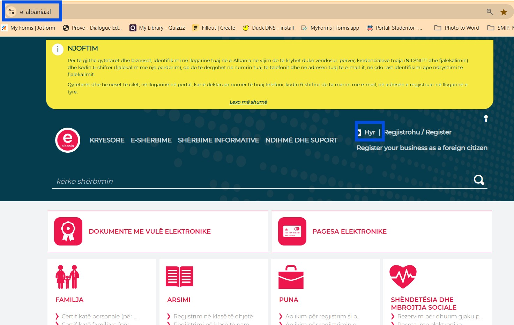
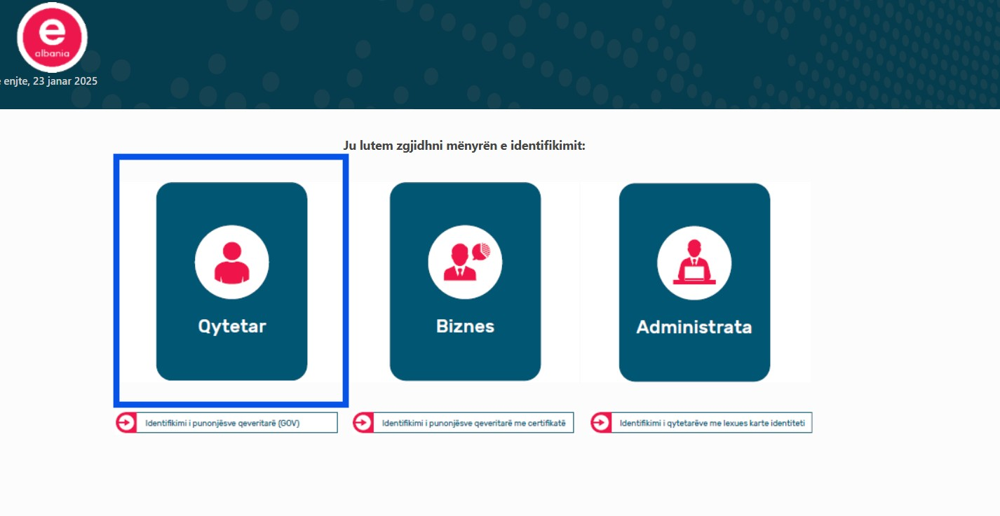
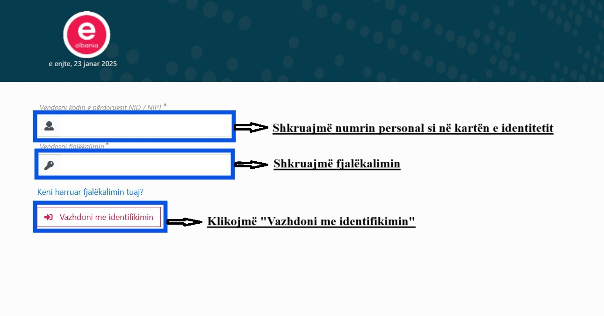
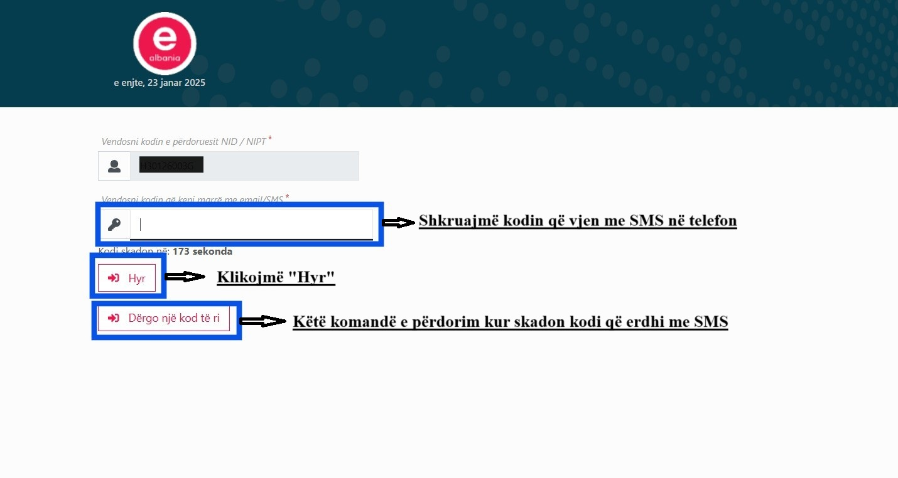
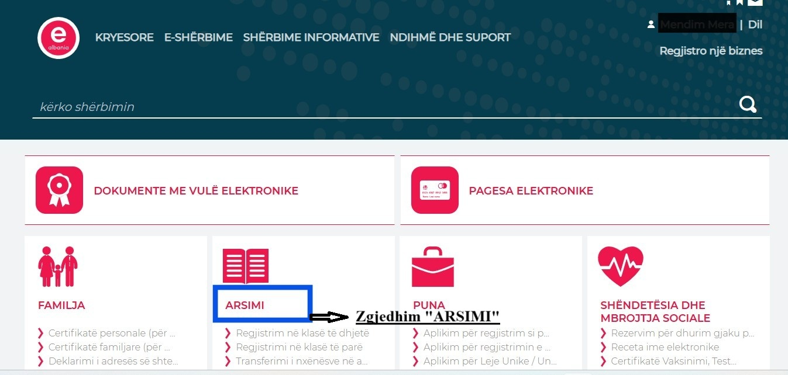
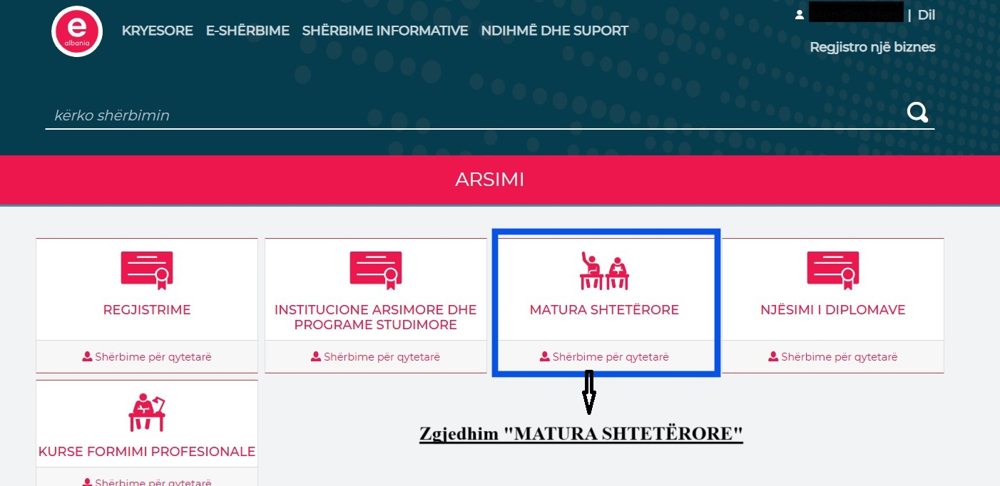
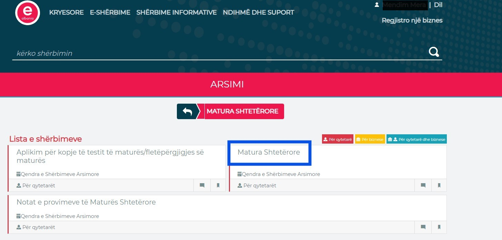

Kujdes! Formulari A1 plotësohet vetëm nga maturantët që janë aktualisht në vitin e fundit, jo nga ata që kanë mbaruar gjimnazin në vitet e mëparshme.
Figura 1 (hapni e_albania.al dhe zgjidhni butonin "Hyr")
Figura 2 (Zgjidhni menunë "Qytetar")
Figura 3 (Plotësoni kredencialet për tu loguar)
Figura 4 (Vendosni kodin që ju erdhi me SMS në telefon)
Figura 5 (Zgjidhni menunë "ARSIMI"
Figura 6 (Zgjidhni "MATURA SHTETËRORE")
Figura 7 (Zgjidhni përsëri "Matura Shtetërore")
